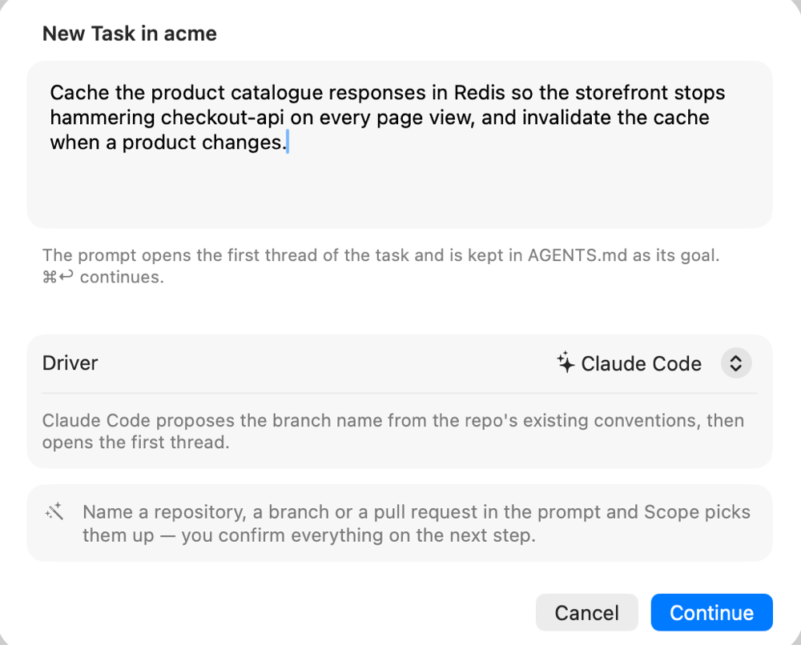
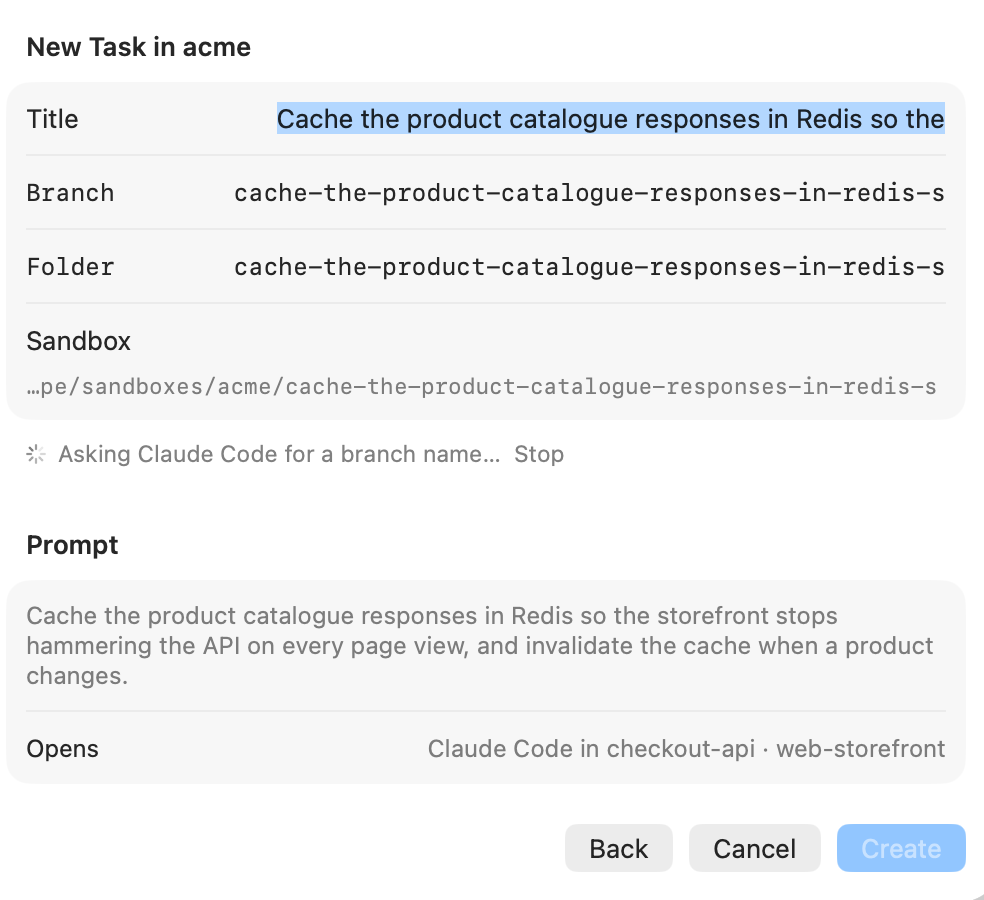
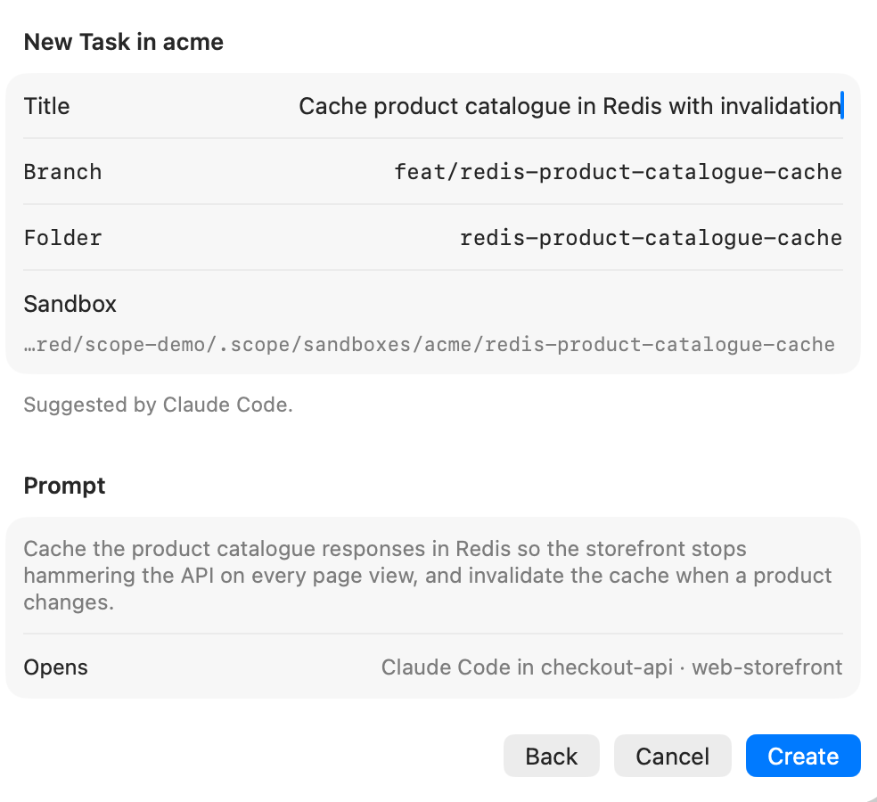
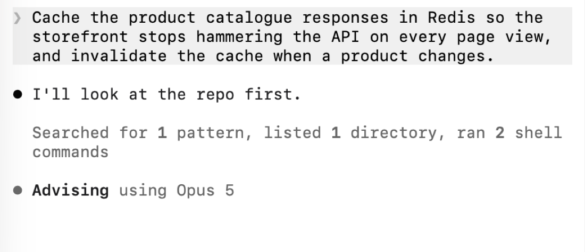

Tasks and sandboxes
A task is a prompt, a branch and one worktree per repository. You write the prompt; the driver names the branch the way your repository already names branches.
Creating a task
⇧⌘T, New Task… in the palette, or the New Task button under the sidebar once Settings › Sidebar shows it (it is hidden by default). The first step asks for two things: what you want done, and which driver should do it. Nothing else — the repositories, the branch and the folder come from the prompt.

The prompt is not a throwaway: it opens the first thread of the task, and it is written into
AGENTS.md as the goal, so a later thread — or a different agent — still knows what this branch is
for.
What Scope reads out of the prompt
Continue reads the request before anything is created:
| In the prompt | What it becomes |
|---|---|
a pull request it asks to work on — …/pull/6613, owner/repo#6613, or #6613 in a single-repository scope | its repository, its head branch checked out, and the task bound to it |
a repository of the scope, by folder name, path or owner/repo | the repositories the task sandboxes |
| a branch that already exists | a start point that continues it instead of branching |
Repositories are matched on their origin remote, not on the folder name — a pull request of
acme-devops/acme-front finds the clone you keep in a folder called front.
Naming a pull request is not asking to work on it. A pull request becomes the start point when the prompt is
little more than the reference — #6613, a pasted URL, or a first line that is just one — or when a sentence opens on a verb of working on
it: review #6613, fix the CI on #6613, take over …/pull/6613, rebase la pr …. One cited
as context in a longer brief — follows #37, (context: #37) — stays context, and the task gets a new
branch.
Everything Scope worked out is shown on the second step and stays editable. A wrong branch name is a typo; a wrong repository is a worktree in the wrong place, so nothing is created from a guess you were not shown.
The driver proposes the branch
Press Continue and the selected driver answers one short question — a microsession: its light model, run once, with the repository's recent branch names and commit subjects as evidence, and the scope's repositories as the list it may choose from:

It answers with a title, a branch and a folder name that follow the convention already in use — if the repo
lives on feat/… and fix/…, so will the task; if it prefixes branches with a
username, so will the task. Scope validates the answer with git check-ref-format, sanitises it and
makes it unique.
It also says which repositories the work touches, and whether the request is about a pull request that
already exists. A microsession has read-only tools, so a request that only alludes to one — "rebase the auth PR
on front" — is enough: it finds the number with gh pr list and answers with the reference. Scope
then resolves that reference itself with gh pr view, exactly as it does for a pasted URL: the head
that gets checked out never comes from the model's own words, and an invented repository path is dropped rather
than corrected.

All three fields stay editable. What you type wins: a proposal that arrives after you started typing only updates the caption, never your text.
No headless driver, no network, driver too slow? Scope derives the branch itself:
the title from the first line of the prompt, the prefix from the dominant prefix among the existing branches, or
feat/ / fix/ inferred from the wording. The caption says which one you got and why.
There is no imposed scope/ prefix — a branch Scope creates looks like a branch you would have
created. The prefix is reserved: asking for scope/x is refused with the way
out — leave the branch to Scope, or pick another prefix such as feat/.
Continuing existing work
The Start from row decides what the sandbox is based on:
| Start from | Effect |
|---|---|
| A new branch | the proposed branch, off origin/<default> — the usual case |
| #6613 … | the pull request's head is checked out; a fork's head becomes pr/6613 |
| an existing branch | that branch is checked out, local copy first, origin/ otherwise |
In the last two the branch is the start point, so the Branch field goes read-only: nothing is created, the work continues where it was. A pull request lives in one repository, so a task on one sandboxes that repository alone. Starting a task on a pull request Scope already has a task for offers that task instead of a second sandbox.
A branch can only live in one working tree. If the branch you start from is already checked out — in the base clone, or in another task — Scope says so, and names the checkout holding it (the task, when it is one of its sandboxes), rather than letting git fail. Create on a New Branch Instead leaves that branch where it is and bases the task on a fresh one.
Sandboxes
Create makes, for every selected repository, a git worktree on the task branch:
~/.scope/sandboxes/<scope-slug>/<task-slug>/
├── AGENTS.md # goal + one section per repository
├── <task-slug>.code-workspace
├── checkout-api/ # worktree on feat/redis-product-catalogue-cache
└── web-storefront/ # same branch, second repositoryYour own checkouts are untouched: they stay on whatever branch you left them on, and the task branch exists in the worktree. A single-repository scope puts the worktree at the task root itself. The one exception is yours to turn on and to trigger: trying a task in your checkout, which stashes, detaches and puts everything back.
The sandboxes folder carries a .metadata_never_index marker, so Spotlight leaves it
alone: no indexing of every worktree's node_modules, and no second copy of your files in search
results.
The branch starts from the repository's base — origin/<default> when it can be resolved,
the local default branch otherwise.
Setup and teardown
A fresh worktree has the committed tree and nothing else: no node_modules, no .env.
Right after Create, in the background, Scope prepares each sandbox — and the task's first thread waits for
it before it starts:
- It copies the files your base checkout keeps out of git,
.env*by default. A file already in the sandbox is never overwritten, and nothing is followed out of the repository:.., a symlink leading outside, a sandbox folder that is a symlink are all refused. A copied file the repository does not ignore is added to.git/info/exclude, so it cannot end up in a commit. The skills, commands and agents under.claude/skills,.claude/commandsand.claude/agentsthat the sandbox lacks (a repository that ignores.claude/) are copied too, each whole, with no setting needed. They are copies, not links, so an agent editing a skill never edits your checkout;settings.local.jsonis left behind unlesscopyFilesnames it. - It runs the repository's setup command —
pnpm install,bundle,make deps— in the sandbox, with your login-shell environment.
The command is the Setup field of the repository's graph card. To override it for
one scope, or to change the copied files, edit the scope in ~/.scope/config.json:
"repoCommands": {
"api": { "setup": "pnpm install --frozen-lockfile", "teardown": "docker compose down",
"copyFiles": [".env*", "config/local.json"] }
}An empty string turns the card's command off. Commands see these variables:
| Variable | Value |
|---|---|
SCOPE_TASK, SCOPE_SCOPE | the task's and the scope's slugs |
SCOPE_SANDBOX | the worktree the command runs in |
SCOPE_BASE_PATH | your own checkout of the repository |
SCOPE_DEFAULT_BRANCH | its default branch |
SCOPE_PORT | the first of ten ports that belong to this task alone |
Every task gets its own block of ten ports, kept across restarts and never shared by two live tasks, so two
sandboxes can run the same dev server side by side. Its threads get SCOPE_PORT too. While a thread of
the task is alive, Scope looks every twenty seconds at which ports of the block its processes listen on, and the
Task section and the task's hover card show each as a localhost:41003 ↗ chip: a click opens the
browser on it.
The same places say what the task's sandboxes take on disk, measured after each setup and every ten minutes;
the scope's settings sheet adds the total over its open tasks and the three heaviest, and scope gc
--dry-run prints the same figures. Archiving a task is what frees the space.
The task row shows a gear while the setup runs and a warning triangle if it failed; the failure lands in the
Problem Center with the end of the log and Run Setup Again. Untick Run setup in the New Task
sheet — or pass --no-setup to scope task new, run_setup: false over MCP —
to skip the command; the files are copied anyway.
The Teardown field is the other end: it runs in each sandbox before Archive or Close removes it, with the same variables and a ten-minute limit. If it fails, the failure is shown and the sandbox goes anyway: whatever the command was meant to stop is stopped by the process sweep that follows.
Threads inside a task
Creating the task opens the first thread on the spot, in the sandbox, with your prompt already sent to the driver.

⌘T inside a task opens more threads in the same sandbox — a shell to run the tests next to the agent doing the work, a second agent on the same branch.
Git guardrails
The threads of a task run git with Scope's own hooks, passed through their environment — nothing is written into any repository, and git run from your own terminal or editor never sees them. Two checks:
- pre-commit refuses a commit in your base checkout, or in another task's sandbox, of a repository this task works on. A repository the task has nothing to do with is left alone.
- pre-push refuses a push from the sandbox onto the remote's default branch: the work goes through the
task's branch and a pull request. A push of tags alone (
refs/tags/v1.2.3, no branch) goes through — that is how a release is cut — but the branch beside a tag is still refused, so a repository'sscripts/release.sh, which pushesmainand the tag together, fails from a sandbox as a whole.scope releaseis the way (below).
Every hook then hands over to the repository's own — husky, lefthook and pre-commit keep working. It is a
guardrail, not a lock: --no-verify still walks past it.
Cutting a release from a thread
scope release [X.Y.Z] [--repo R] [--dry-run] [--force] (MCP: scope_release) cuts a
release the way you would from a clean, up-to-date main — but it is Scope that does it, not the thread.
Scope reads the remote's default branch (and refuses when there is none), clones it into
~/.scope/releases/<owner-repo>/ (reused, fetched and reset, from one release to the next), asks
gh that no release workflow is already running and that CI on the head is green
(--force overrides the CI check; without gh, the check is skipped and the answer says so),
then runs the repository's scripts/release.sh [X.Y.Z] --yes there — or, without one, what the script does:
the next version from git cliff --bumped-version, an annotated tag, the tag pushed — with your login
shell's environment, your git identity and credentials, no SCOPE_* and no sandbox hook. The script's
output streams back while it runs and comes with the answer, its end kept when it is long. Without a version, the
next one from the Conventional Commits since the last tag; --dry-run clones, checks and prints the notes
and the plan without pushing anything, and asks nobody.
For agents it follows Settings ▸ Automation ▸ Releases, after asking by default — the one place Scope's autonomy default flips, because a pushed tag is a shipped version. Your own terminal is never asked.
AGENTS.md
Scope writes a context file generated from the prompt and the graph: the goal, and one section per repository with its purpose, stack, setup and test commands.
It lands where the task's threads start — the sandbox when the task has one repository, the task root when
it has several — because a file anywhere else is a file the driver never opens. It is written under every name
the installed drivers read (AGENTS.md, and CLAUDE.md for Claude Code; the profile's
context says which), with the same content in each. Inside a sandbox each file is added to
.git/info/exclude, so it never shows up in your delta.
A file Scope did not generate is never overwritten: a repository's own AGENTS.md or
CLAUDE.md stays exactly as it is. For Claude Code the task context then goes to
CLAUDE.local.md, which Claude reads alongside the repository's file (excluded from git like the
others); other drivers start from the repository's file and their prompt.
Every repository's skills
A thread at the root of a task of several repositories would see none of their skills, slash commands or
subagents: Claude Code looks for .claude/ in its own folder, and the repositories sit one level down.
So Scope hands it each sandbox with --add-dir (the profile's addDir), and sets
CLAUDE_CODE_ADDITIONAL_DIRECTORIES_CLAUDE_MD=1 so each repository's CLAUDE.md is read
from the start rather than only when the agent opens a file there. A thread already running when you add a
repository sees it the next time it is relaunched or resumed.
Archiving and closing
| Action | Effect |
|---|---|
| Archive | removes every worktree, keeps the branches and the record |
| Close | the same, then the record goes; optionally the branches too |
One click, no question. In order: the task's threads are hung up, its teardown runs, every process still
running under its folder (or started with its SCOPE_TASK_ROOT) gets SIGTERM, then SIGKILL three
seconds later, the uncommitted changes are saved, and the worktrees are moved out of the way in an instant and
deleted in the background. The row leaves the sidebar as soon as you click; a second click joins the archive in
progress.
Nothing is lost. Uncommitted changes — tracked and untracked, ignored files aside — are committed to
refs/scope/salvage/<slug>-<id>/changes-<time> in the repository, and the notice
that says so has Restore, which brings the archived task back with its sandboxes and those changes. A
branch deleted on close that git calls unmerged (a squash merge looks like that) keeps its last commit the same
way. Saved changes no task points to are deleted after 30 days.
If a step fails, the task stays out of the sidebar, the Problem Center says why with Retry, and the next launch finishes the job.
Every turn leaves a checkpoint
Each time a turn ends in one of a task's threads and a file changed, Scope snapshots every sandbox of the task —
tracked and untracked files, ignored ones aside, the same private-index commit as the saved changes above — under
refs/scope/checkpoints/<task>/<n> in the repository. The branch does not move, the sandbox's
index is not touched, and a turn that changed nothing leaves nothing. Turns ending seconds apart share one
checkpoint. Fifty are kept on an open task, five with an archived one, none after a close.
In the Task section, a turn that left a checkpoint has a dot under its bar in the timeline, and the
Checkpoints list under it says when, which thread and turn, the first words of the reply and
+N −M against the checkpoint before. Hover one for three actions, none of which asks:
Show diff opens the checkpoint against the sandbox as it is now in the reading column; Restore files
writes the checkpoint's files back into every sandbox (files it had restored, files that appeared since removed) —
never a branch reset, never a commit touched — after taking a checkpoint of the files as they are, which the notice
names as the undo; Branch from here creates <branch>-cp<n> at the checkpoint's commit
without checking it out. scope task checkpoints <task> lists them and
scope task restore-checkpoint <task> <n> restores one; an agent may restore within its own
task only.
Automatic cleanup
Scope tidies up after tasks on its own: when it opens, every 30 minutes, and after each archive or close. It
stops the processes left by archived or closed tasks, moves to the trash the sandbox folders no task owns (their
uncommitted work saved first), drops git's records of sandboxes that no longer exist, and deletes expired saved
changes. A folder younger than ten minutes is left alone — a task being created. Only what lives under Scope's
own home is cleaned: a worktree of yours that git calls stale is not Scope's to prune. Large untracked files
(over 50 MB) are not saved into your repository; the notice names them. One quiet line in the Problem Center says what was cleaned. Settings ▸ General ▸
Tasks turns it off; scope gc --dry-run shows what it would do.
Starting from a pull request
Two ways in, one result. Name the pull request in the prompt, or open it from the Pull Requests sheet
(⇧⌘P), which lists the open pull requests of a repository through gh. Either way the sandbox sits on the PR's
head branch — including a fork's head — the task is bound to the pull request, and you review and push back
without touching your own checkout.
From the command line, scope task new --pr <ref> (start_pr over MCP) names it
outright — a number, #123, owner/repo#123 or its URL — and fails when it cannot be found.
A pull request Scope only read off the prompt is a guess: when it is not one of the scope's (another repository, a
number that does not exist), the task is created on a new branch all the same and the answer says, in one line,
which reference it ignored.
Starting from an issue
A GitHub issue opens a task the same way, minus the branch: scope task new --issue 123
(issue over MCP; also #123, owner/repo#123 or the issue's URL) reads it with
gh issue view and puts its title, body and labels at the top of the brief, so the first thread reads
the issue before anything else. The task records the issue, the Pull Request section shows it, and the task's
context file asks the agent to reference it from the pull request (Closes #123). Without the flag,
an issue the prompt asks to work on counts — an issue URL, or fix #123, which is tried as a pull
request first and then as an issue — while one the brief merely cites stays context. The microsession that names a
task may read issues too (gh issue view is on its allowlist), so "fix the flaky login issue" finds
it without a number.
Mentioning a past task
@task:<slug-or-id> anywhere in a prompt — a new task, a new thread, a message sent to a thread,
from the command line, over MCP, from the palette's Ask Orchestrator… or the sidebar's reply field — is
replaced, before it reaches the agent, by a compact block between [Scope: context of task … — begin]
and … — end]: the task's name, brief, branch, pull request and its state, topic, and the opening of the
answer kept when it was archived (or its report file). Archived and closed tasks count, so a study feeds the task
that implements it without anyone pasting. @thread:<id> does the same for a thread: title, task,
last answer. In the app, typing @ in a message field offers the tasks of the scope, recent first; Tab
or ↩ completes one. A mention nothing answers to stays as typed, with a note.